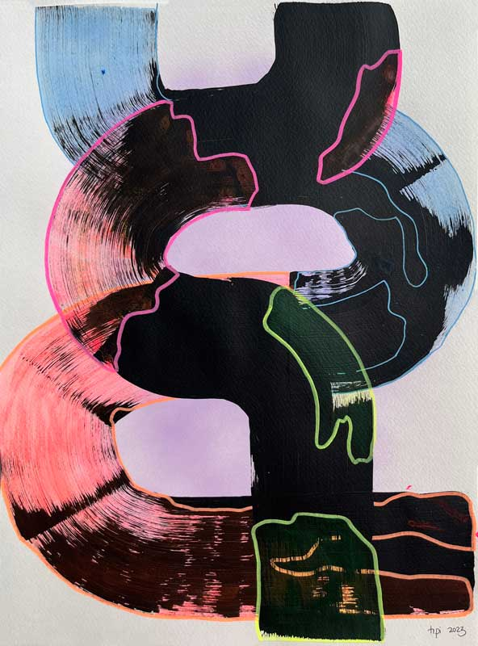
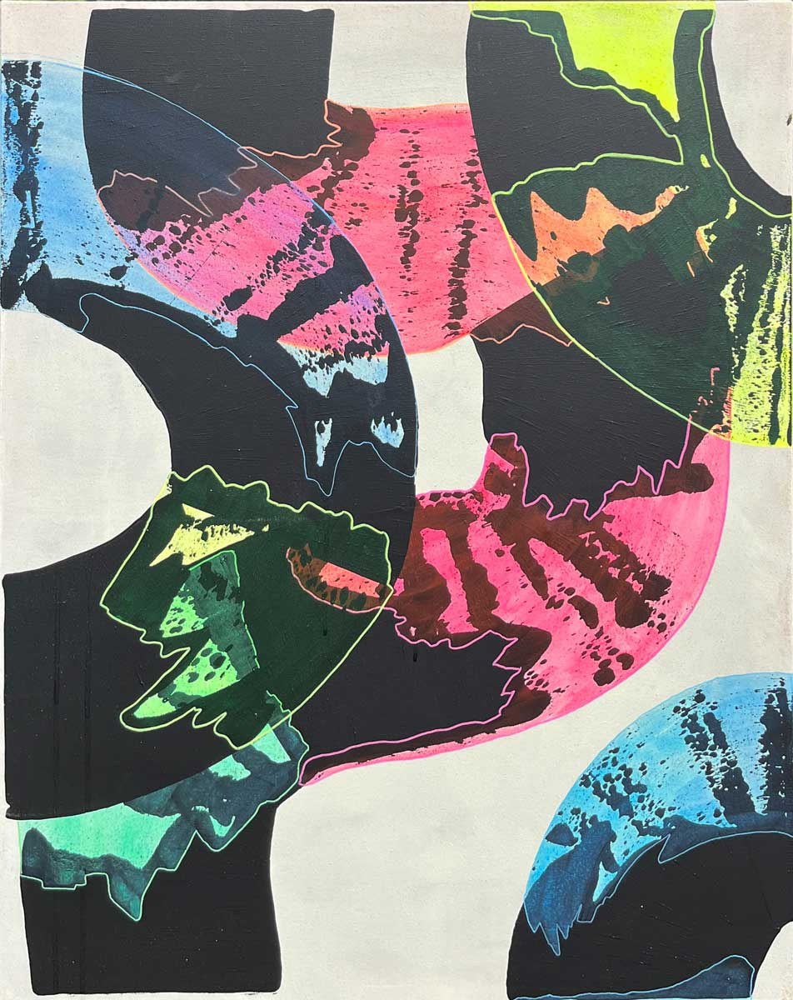
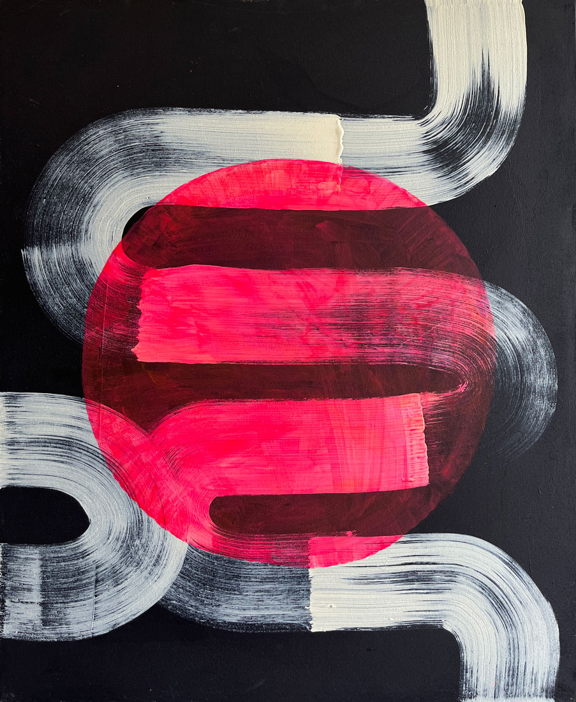

The path of life, the unknown, the profound moments of self-discovery, and the challenges that shape our individual narratives. The vast expanse of possibilities that lie before us, beckoning us to embark on our unique journeys. There we find the space for introspection, contemplation, and growth, as we navigate the twists and turns that define our existence.


